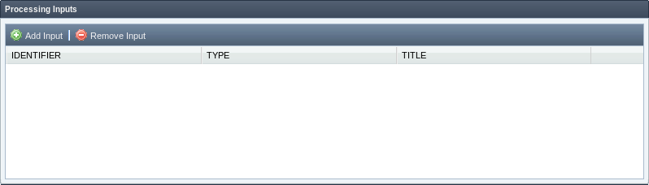
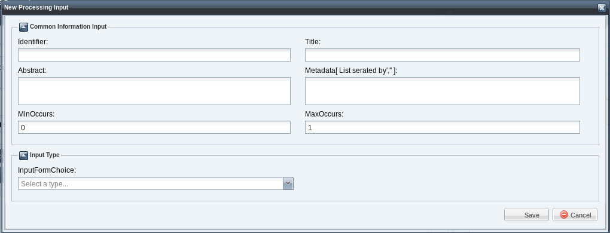
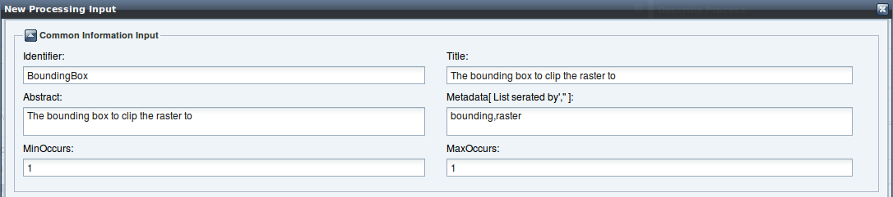
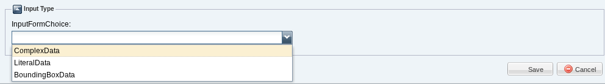
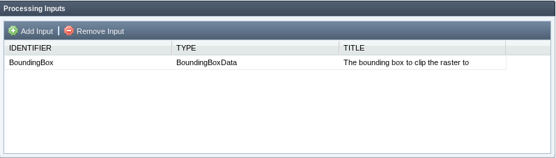
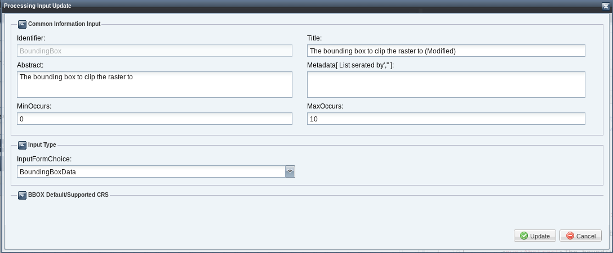
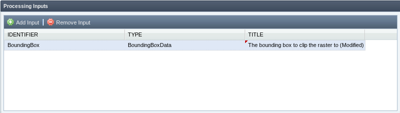
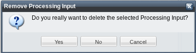

Processing Input
The processing inputs in the wizard are managed by the "Processing Inputs" section. In this section you can add, edit or delete an input processing.

Add new Processing Input
In order to add new processing input click on "Add Input" button, a new window will be displayed:

At the top of the window should be inserted the general information. These are:
- Input Name. Unambiguous identifier or name of a input (Mandatory).
- Input Title. Title of a input, normally available for display to a human (Mandatory).
- Input Abstract. Brief narrative description of a input, normally available for display to a human (Optional).
- Input Metadata. Comma-separated list of words that will be included in the Metadata of the processing input (Optional).
- Min Occurs. Minimum number of times that values for this parameter are required (Mandatory).
- Max Occurs. Maximum number of times that this parameter may be present (Mandatory).

The types of inputs that can be defined as follows:
- Complex Data. Indicates that this input shall be a complex data structure (such as a GML fragment), and provides lists of formats, encodings, and schemas supported (see "Complex Data" section).
- Literal Data. Indicates that this input shall be a simple literal value (such as an integer) that is embedded in the execute request, and describes the possible values (see "Literal Data" section).
- Bounding Box Data. Indicates that this input shall be a BoundingBox data structure that is embedded in execute request, and provides a list of the CRSs supported in these Bounding Boxes (see "Bounding Box Data" section).

After inserting information about the type of input, click on "Save" button. The input will be added to the "Processing Inputs" grid.

Update Processing Input
In order to update a processing input select the input in the "Processing Inputs" grid and make double-click. A window with the input information will be displayed:

All the information about the input, except the identifier, may be modified. After changing information about the input click on "Update" button.

Remove Processing Intput
In order to remove a processing input select the input in the "Processing Inputs" grid and click on "Remove Input" button. A confirmation message will be displayed:

Click on "Yes" button. The input will be removed and the the "Processing Inputs" grid will be updated.